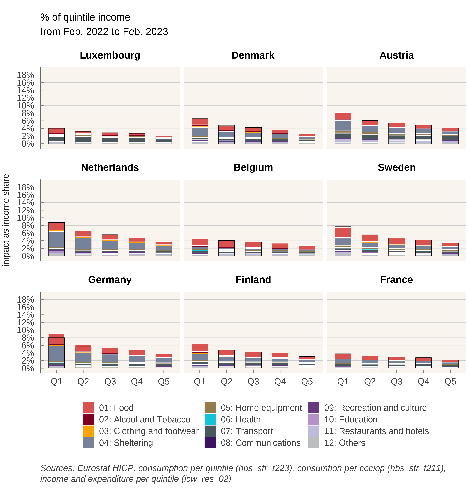
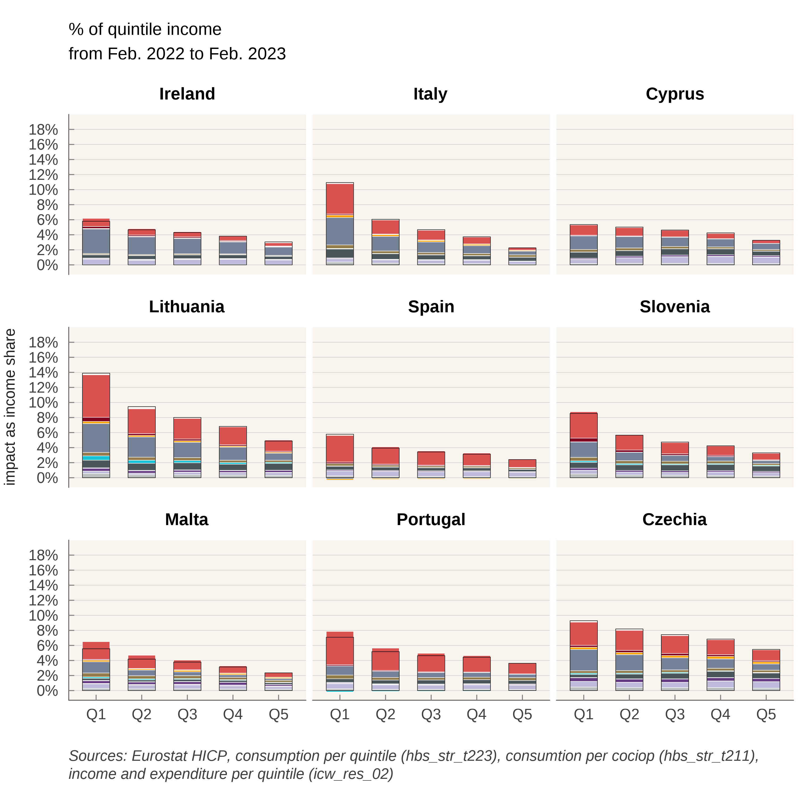
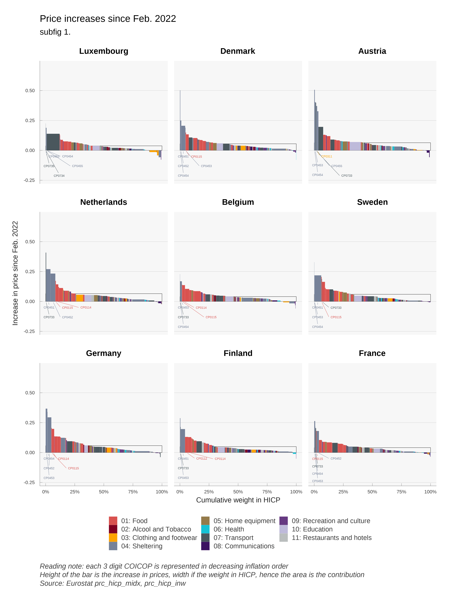
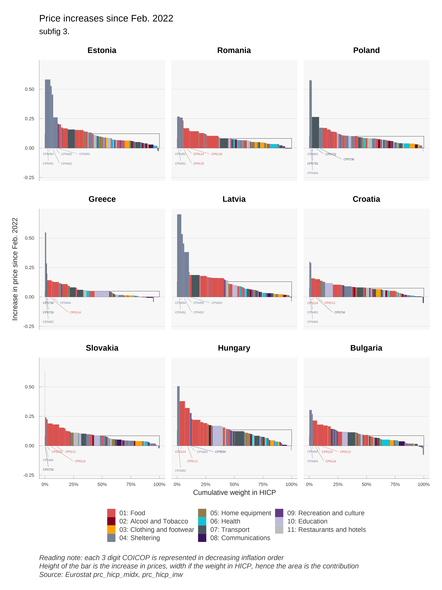

Social Impact of the War in Ukraine
Using data on HICP per COICOP and quintile, we calculate for EU member states the impact on income of households of price evolution since the invasion of Ukraine by Russia. Most of the loss in income is due to energy price increases. In some countries, food prices are also an important factor. Code and data used in the note are available at http://github.com/ofce/siwu. Updated with HICP release 17/11/2022, prices indexes for all products up to october 2022. Next update on 16/12/2022
2 Results: general discussion
The 3 following graphs (Figure 3, Figure 4, Figure 5) are displaying the most important increases in prices since the beginning of the war in Ukraine.
In most countries, the COICOP categories concerned by prices increases are transportation especially CP0722 which are “Fuels and lubricants for personal transport equipment”, and various categories of energy for housing (heating, hot water or appliances), in the categories CP0451 to CP0454 (Electricity, Gas, liquid fuel, solid fuel). In some countries, some food categories are displaying a sharp increase (especially oils and fat). Annex tables are summarizing the most important increases.
The following 3 graphs (see Figure 6, Figure 7, Figure 8) are displaying the breakdown by quintile of the impact in purchasing power per countries.



Compared to other countries, and due to governmental policies, households in France are relatively preserved by price increases. This is also the case in Cyprus and Malta, countries that are not dependent on gas for household heating. In Sweden, use of gas or oil for heating is marginal since 2010 for domestic heating. Oil, which represented 50% of energy consumption in the early 1980s has been replaced by heat networks (that themselves rely only marginally on fossil fuel)3 and electricity, also decarbonized. National differences in how household are impacted today are therefore partly the consequence of long-term policies (environmental and/or geopolitical).
3 According to Swedish Environmental Agency, total greenhouse gas emission from buildings (heating) decreased from 9.30 million tonnes of carbon dioxide equivalents in 1990 to 0.9 in 2018 https://ec.europa.eu/energy/sites/ener/files/documents/se_2020_ltrs_official_translation.pdf
Price increases are not anymore mostly about gas : Belgium has the second biggest final consumption of gas in the European Union (behind the Netherlands) but price increase since February is among the lowest in Europe (The Netherlands remain among the most affected). Gas has increased prior to February 2022 : in %, the evolution of gas prices are greater from September 2021 to February than from February to September 2022. Price increases have diffused to energy-intensive sectors. In Czechia and Slovakia, the biggest contributor to loss of purchasing power is “Meat” ; it is “Restaurants” in Spain, Ireland, and Croatia.
It is also noticeable that households in the first income quintile tend to be more affected (before eventual governmental transfers), in percentage of income. This is not surprising: poorer households tend to consume more energy and food as a share of income. Poorer households, from the first quintile, are most hit in Greece, the Netherlands, Lithuania. This is due mostly to housing expenses in the Netherlands, but food also plays a role in Greece and Lithuania. The next Figure confirms this conclusion. We can clearly see that for all countries, the impact on households from the first quintile of income (Q1) is much greater than for the richest households (Q5). This is particularly true in Estonia and Lithuania. The gap between how Q5 and Q1 are impacted is also greater in countries where households are most affected: the poorest households bear the most risk from energy and food price volatility.

3 Results: discussion by country
3.1 Austria
In terms of overall impact of price hikes on living standard, Austria stands in the mid-tier amongst EU countries (16th most affected at 6,9% against a non-weighted average of 7,9%). The main price increases borne by Austrian consumers concern liquid fuels and fuels. Policies include 900 million euros for energy tax cuts over 12 months, energy checks for all and for the poorest (300 euros), and commuting subsidies.
3.2 Belgium
Belgium was among the hardest hit in the European Union by price increases between September 2021 and February 2022 (pre-invasion) because the country is heavily dependent on gas. Since February 2022, prices have increased a lot less. This is mostly due to Gas and Fuels: prices have increased early in Belgium, maybe due to the fact that a lot of consumers have variable-price contracts. At first, policy was targeted to the poorest (500, 000 households) through social energy tariffs and an energy check. In February, a VAT reduction for electricity from 21% to 6% was announced from March to July (extended to September), as well as a check for every household. In March, a 200 euros check was announced for oil-heated households and taxes on diesel and petrol were reduced. It is worthy to note that, as the crisis extended policies went from targeted checks to decreased prices for all, which can explain why we see in our data price that the biggest increases were the end of 2021.
3.3 Bulgaria
Bulgaria is in the top tier of hardest hit countries in the European Union by price increases since September (15,6%) and February (9,6%). This is due to large price increases in fuels and oils. Food items (Cereal, Meat, Milk) have also gone up in prices, probably due to greater dependency to Ukraine. Also, being a poorer country than average in the EU, the weight of Food and beverages, Utilities and housing and Transportation is also higher ; the three broad categories represent almost half of the CPI basket. At first (October) policy response was directed to companies in order to cap electricity prices for businesses. In December, a new ruling coalition voted to freeze power and heating prices.
3.4 Cyprus
Cyprus is in the low-tier for countries impacted by price increases. Its status as a an island insulates the country from a direct impact of natural gas inflation: as with Malta, the country does not supply households with gas. Price of electricity has gone up, even more than in other EU countries: reduction in VAT (from 19 to 9) only went into effect in May. Although, the country imports electricity from Turkey (for northern Cyprus households) and these prices have gone up even more than in the EU.
3.5 Czechia
Czechia is in the top-tier for countries impacted by price increases since February (10,4%) and September (17,8%). The biggest contributors to price increases are Food items, gas and electricity. There were policy responses in December when the government (temporarily) exempted electricity and gas from VAT (from 21%) for households and energy-intensive industries. This exemption could be made permanent for renewable energies. In a first, the government temporarily (November-December 2021) cut VAT to 0% on domestic gas and electricity in breach of the VAT directive. The wave was revoked, and some freedom has been voted but the VAT debate will be a concern in the near future now that the Pandora box is opened.
3.6 Denmark
Denmark is in the mid-tear of impacted countries since January (and September). If the price of gas has gone up massively, it represents a lower share of the CPI basket than in other countries. The same is true, to a less extent, of electricity. The main policy is a heat-check for the most vulnerable households, mostly for households with gas-heaters (on a per-household basis, thus leaving incentives unchanged).
3.7 Estonia
Estonia’s consumers are the hardest hit by price increases in the European Union. It is also among the coutries where the ratio between first and fifth quintile purchasing power loss is the highest (x2,5).
The weight of Fuel and Electricity items are high in this northern European country : Talinn is at the same latitude than Stockholm and just 80km from Helsinski and used to rely on oil shale (3/4 of energy in 2018) but pledged to stop its use by 2035. On August 22, the country set a record for electricity price at 4000 euros/Mwh (the maximum exchange price set by the European Commission). Furthermore, in 2020 neighboring Russia was the first country of origin for imports (11,8% of imports), so the conflict hit the country disproportionately.
The country put in place social electricity tariffs since September and reduced electricity prices for all since October. In January the government put in place a cap on electricity and gas prices for households.
3.8 Finland
Despite being a close neighbor from Estonia, Finland is in the lower-tier in terms of price impact. Energy consumption is high but relies less on fossil fuels. As of 2008, the country has four nuclear reactors in two power plants, producing 60% of its electricity needs. Natural gas is not used for individual heating. Domestic heating relies primarily on electricity and district heating (which rely mostly on oil, peat and wood). In terms of policy, the government increased the maximum deduction for commuting expenses (density is low and mileages are high). The annual ceiling for increases to tariffs has been reduced from 15% to 8%.
3.9 France
France is the least hit nation in Europe by price increases. For consumers, price increases since February for Electricity (5%) were far lower than for neighbors, mostly because government imposed price regulations very early. To cover the loss, EDF increased its capital by 3 billion euros in March (for a total estimated cost of 8 billion). Also, Checks have been emitted for the lower income half of the population. And in March, a 15 cents discount on petrol prices at the pump was decided by the government, increased to 30 cents in September. It’s probably not a coincidence that broad / not targeted measures were taken during this electoral year. France is among the 5 countries were the ratio between first and fifth quintile purchasing power loss is the lowest (x1,7) and it is by far the country with the lowest gap (-1 percentage point against -7,3 pp. in Estonia).
3.10 Germany
German consumers are in the mid-tier concerning the impact of price hikes on real incom. Gas prices have not gone up as much as in the Netherlands and Belgium. Electricity price increases has been moderate compared to other countries. As in France, the government intervened on the price of electricity, reducing the EEG surcharge at a cost of more than 3 billion. In March, further measures were announced, including reduction in fuel prices though a tax cut (30 cents for gasoline) and a 300 euros check. This is the largest cut in Petrol Excise duty in Europe.
In September 2022, the government presented an overall energy relief package worth 200 billion.
3.11 Greece
Greece is also in the mid-tier in terms of impact on consumer prices. Price increases are mostly driven by gas, fuels, and food products. However, the government decided on a 60% electriciy rebate capped at 600 euros and for households earning up to 45 000 euros a year. This will be financed partly on a tax on the profits of energy suppliers. This might have, in part, some of the same effects of a regulated price but will not appear similarly in the national accounts, inflation, and household income.
In September 2022, the government put in place non linear pricing of energy prices according to Household consumption (<500kwh). A further 50 euro per megawatt subsidy is offered to consumers who cut their average daily consumption by 15% year on year.
3.12 Hungary
Hungary is among the most hit by price increases. Gas and Food items are the biggest drivers. Electricity prices for households are regulated (below cost). Furthermore, a price cap was introduced on retail fuel prices. Price hikes are felt mostly through food prices (bread, milk, restaurants) and cars. Price caps being very costly, they are being removed for high-usage households. Hungary is the country where the ratio between first and fifth quintile purchasing power loss is the lowest (x1,5 against x2,5 in Estonia).
3.13 Ireland
Ireland is also relatively protected from energy price inflation., as reflected by the presence of Restaurants as top contributor above electricity and fuels. The price of liquid fuels exploded but only represent 1% of consumption. Gas is not used very much either compared to other countries.
The main policy is a 30% tax rebate on heat, electricity and broadband.The country also made mean-tested payments to households with the highest cost of home heating, and a 200 euros electricity credit to all households. In September, the government put forth a plan to help businesses.
3.14 Italy
With France, Italy is one of the countries who suffered the least from inflation. It entered the crisis with low growth and low inflation. The government implemented tax cuts in the gas and electricity sector, and also a 30 cents reduction of gasoline through July. Data for consumption share is not available for the year 2015. We used data for the year 2005.
3.15 Latvia
Latvia has seen a very important impact of price increases : since February, it is the second most hit behind neighboring Estonia. Other neighbors include Russia and Bielorussia. Russia is the second country of origin for imports, mostly energy products, but also chemicals and food.
Policies consist mainly in reducing the price of electricity for consumers and businesses. Heat will also be subsidized for Households this winter.
3.16 Lithuania
Not surprisingly, Lithuania is in a similar situation as Latvia. Main contributors to price increases are Heat Energy, Fuels and Electricity. Food and Cars are also heavily impacted
During the crisis, the government decided to postpone the liberalization of the energy market. It is noteworthy that impact on income is much higher for poorer households than richer (x2,8) with a gap of 6,2 pp.
3.17 Luxembourg
Luxembourg consumers were among the lowest hit by price increases. Gas and Electricity are not among the biggest drivers, which include restaurants and meat along with Fuels.
3.18 Malta
Malta is the second least impacted countries in the European Union. As for Cyprus, it does not use natural gas for domestic heating. The energy provided is regulated and prices frozen. Price increases for consumers concern mainly food items (restaurants and meat).
3.19 Netherlands
The Netherlands is perhaps both the most deregulated country in the European Union and one of the hardest hit by energy price inflation initially. Gas and Electricity prices tripled very quickly as many consumers have variable price contracts and spot and future prices exploded. Also, the government was less prone to alter the price mechanism than in other countries.
However, tax cuts on energy are in effect since April 2022 (when other governments intervened in September 2021 and other did not need to intervene due to frozen prices). Also, the government announced a price cap on electricity starting January 2023 (up to a certain volume).
3.20 Poland
Poland shares the largest frontier with Ukraine in the European Union and hosts the most refugees. It is also in the top tier in terms of impact of prices on purchasing power. Gas prices, fuels, petrol, but also food items increased severely.
Since January, VAT is reduced on food, gas, petrol and heating. A check provides a maximum of 100 euros per person depending on income and type of heating. The price of electricity will be capped in the coming winter.
3.21 Portugal
Portugal is in the low-tier in terms of impact on consumers. Energy tariffs for household consumers are regulated and are anticipated to decrease in 2022 relative to 2021. Electricity has not increased as much for consumers as in other countries as Portugal (with Spain) has benefited from the Iberian exempition as an ‘energy island’ : electricity prices have been disconnected from those set on the European market.
3.22 Romania
Romania is a southern neighbour to Ukraine and consumers suffer an above average impact on prices, mostly from Gas, Petrol and Food items: main contributors are not very concentrated, Bread and cereals and Meat are the two main contributors. Bread price increases hurts the poorest households.
The government put in place compensations for Electricity and gas. Government will compensate 4 lei per kw for households who respect a consumption limit.
3.23 Slovakia
Slovakia resembles Romania as a above average country in terms of impact on prices, with moderate contributions across the board: Gas, Petrol, Heat, Electricity but Meat, Bread and Cereals and Milk are the main contributors.
Policy is mostly targeted to electricity prices, through a deal with the national company.
3.24 Slovenia
Slovenia’s situation is about average in the European union. It is hit first by Fuel increases but next by Food items and restaurant.
Electricity and Gas prices are caped. Gasoline prices were caped in March and from February to end of April households were exempt from paying electricity bills and excise duties on electricity.
3.25 Spain
Spain was initially in the top tier for price impact on consumer income but is now in the low-tier. As for Portugal, consumers benefit from the Iberian exemption. Main contributors to price increase are Restaurants, Meat and Bread and Cereals.
VAT was decreased on electricity according to consumption. A heating social bonus was also passed.
3.26 Sweden
Price increases have a average impact on income in Sweden, mostly through Electricity, Food items and cars. Sweden does not use natural gas in housing heating anymore (replaced with district heating and electricity). Tax on diesel and petrol were reduced since June. Housing and Child allowances were increased.
4 Annexes
4.1 Main effect per countries


4.2 Figures over a one year period





1 Social Impact of War in Ukraine
The invasion of Ukraine by Russia on February 24, 2022 opens a new world that calls for great cohesion in Europe. The response operates over multiple dimensions, and we propose to analyse the economic and social consequences of the war in Ukraine. To that end, we shall focus on the evolution of Europeans’ purchasing power in the short run.
1.1 Main channels
The main channel that we identify, concerning the social impact of the war in Ukraine, is the rise in the prices of consumer goods or services linked to actual or anticipated interruptions in the delivery of certain products imported from Russia or Ukraine. These products are mainly crude oil, gas, certain cereals or oil seeds, nitrogen fertilizers and other products used in industry. There are generally substitutes (of origin or nature) for these products, but the rigidity of supply chains and/or production capacities have led to a rise in prices since (and before) the war started. The partial exclusion of Russia from the Western financial system and the prospect of an embargo extending to gas supplies amplifies the price movements. Evidently, an embargo would amplify it further, with large impacts on prices, and probably also volumes (via quotas).
These price hikes are cascaded down to end consumers in the European Union. The price of gasoline at the pump reacts quickly to changes in the price of oil. For other goods, the contracts (between the final consumer and his distributor, between the distributor and the supplier) are complex and can introduce inertia or an absence of transmission. Other prices can increase in cascade such as electricity through indexation or price formation as for the single market for gas or electricity. However, subsidies or price regulations can prevent the price hikes cascades.
Due to lack of data or clear estimation of mechanisms, we don’t take in account 3 important channels.
The first one is the response of government to compensate price increases when not directly acting on prices. Exceptional checks, increases in allowances or income are note accounted for. Data provision on this matter by Eurostat in a standardized format would be very useful.
We don’t take in account expected increase in future prices due to known indexation mechanisms. For instance, in some countries, rents are re-evaluated on an index which is calculated using prices of certain goods or services.
We don’t take in account increases in wages or other components of income that could increase in the future due to price increase. Some of those indexation are explicit in private contracts or mandatory through general law, depending on the country and the source of income. Some increases are going to occur due to non explicit market mechanism and negotiations between economic agents. Here also, there is a clear lack of standardized information about country and source of income heterogeneity. Years of low inflation may be a explanation for this poor documentation of essential short term mechanism, but the surge of prices increases points the urgent need for a comprehensive collection of this information, in order to forecast future evolution of purchasing power and redistributive effects caused by increases of prices, being a general increase in price or located on a few products.
1.2 Methodology
Our methodology is as follows:
1 We use a loess smoothing algorithm giving results close to X11/X13 procedures from the Census Bureau.
1.3 Context
The most important tensions concerning price hikes in Europe today come from the gas market (see Figure 1). Gas is one the main source of energy in Europe (at the beginning of the crisis, it represented 21.5% of EU’s primary energy consumption ; 32.1% for households) and Russia is the main supplier. Furthermore, gas was relatively cheap: the average final household price for kWh is 6.5 cents against 21,6 cents per kWh from electricity. The EU imported 80% of its total gas needs, around half of it (43%) from Russia. Other suppliers included Norway (24%), Algeria (13%) and the US (7%). On March 8th, the Commission published a plan (REPowerEU) to reach compete independence from Russian fossil fuel “well before the end of the decade”. However, in the short term, supplier substitution is hard as most of these imports come through pipelines and infrastructures for Liquefied natural gas (LNG) is insufficient. As for now, Russia has cutoff gas supplies from Nord Stream 1 (which has been cut off probably indefinitely by suspected sabotage). The share of Russian gas in EU imports has dropped to 9% in September 2022.
Also, the fear of an embargo has had a huge impact on gas prices in Europe this summer. Dutch TTF Gas Futures (February 2023) peaked at 342 euros in August 2022, against 30 euros at the same time in 2021. It decreased to 200 euros in mid-September (and is now trading at 145 euros on October 24) : stock capacities are being replenished and the autumn weather is mild. It is still a five-fold price increase.
This affects directly wholesale electricity prices as gas is a major contributor to EU electricity production. Consumers across the European Union have different exposures to energy price increases, depending on nationality, income, mode of transport and domestic heating. Households represent a quarter (26%) of final energy consumption. National exposures of households to energy prices differ greatly. If we look at energy consumption in housing by households, at the EU level, space heating represents according to Eurostat (2019) 63% of consumption; and 32% of energy consumption is provided by gas.
However, gas is not used in small islands like Cyprus and Malta (0%); and marginal in Sweden (0,3%) and Finland (0,5%), who use mostly derived heat and electricity (see Figure 2). On the other hand, gas represents the majority of energy in housing in the Netherlands (69,3%) and Italy (51,8%). Also, the need of energy might differ between nations, especially for heating purposes due to climate and thermal efficiency of housings: households in Malta, Portugal, Spain and Cyprus use far less energy than in Luxembourg, Austria and Denmark. Likewise, passenger mobility differs between Italy, Norway, Finland, Germany, France (above 13 000 km per capita per year) on one hand, and Romania and Slovakia (around 7 500 km/c/y)2. Moreover, only 30% of travel distance in Romania is by car as driver against 63% in Italy. Some, but not all, of these differences can be attributed to income differences.
2 Odyssee-Mure: https://www.odyssee-mure.eu/publications/efficiency-by-sector/transport/passenger-mobility-per-capita.html
Countries, gas and electricity companies and consumers are affected differently in the European Union through volumes, but also through prices. Despite price convergence due to the evolution towards liberalization and a single European energy market, national utilities and consumers face different prices depending on the contracts signed with suppliers.
Most European countries have gone from oil-indexation to gas-indexation in the long-term contracts signed with gas suppliers. In the European Union, oil-indexation represented nearly 80% of contracts in 2005, and only around 20% in 2019, replaced by gas-indexation. This trend started, and is most pregnant in Northwest Europe (Belgium, Denmark, France, Germany, Ireland, Luxembourg, Netherlands). The change is less dramatic in Mediterranean (Greece, Italy, Portugal, Spain). Gas-indexed contracts have not really increased in South-east Europe (Bulgaria, Croatia, Romania) or Scandinavia and Baltics (Finland, Sweden, Lithuania, Latvia, Estonia). Suppliers (Russia, Norway and Qatar) were not particularly keen in switching to gas-indexation : since oil is the major alternative to gas, indexing contracts to oil prices ensures that there is no switching when oil prices fall and variations in volumes unfavorable to both gas exporters and western commodity companies facing take-or-pay penalties. Hub gas prices are also more volatile than oil. Gas-on-gas indexation became more popular with the decline of switching possibilities, the liberalization of markets and the development of hubs, notably the Dutch Tittle Transfer Facility (TTF), from 2003 onward. In this mindset, gas price volatility is not a problem but part of the solution since it produces the right price signal. Also risks linked to market power, one of the reason behind oil-indexation, were downplayed (it is much easier to transport oil than gas, so the oil market is closer to a world market, whereas Russia is a major player in the European gas market and can therefore manipulate the hub price).
This is important because, in this crisis, oil has not increased as much as gas (In late September, Brent was stable in dollars compared to last September). Also, consumers might be more or less protected by the contracts they signed with the gas and electricity utilities. There is a trend towards more variable-price contracts, especially in countries like Luxembourg, Slovenia, Ireland, Spain, Belgium, Czech Republic and the Netherlands: in these countries, more than 50% of consumers have variable-pricing gas contracts. In Belgium, suppliers have the right to index their variable gas and electricity prices monthly and use the indexing parameters of their choice (of course, they might wish to link it directly to their wholesale price so that they do not take any market risk). The government justified the decision in the objective to “bring the bill closer to the market reality”. However, if demand is relatively inelastic in the short-term, this price-liberalization increases volatility and risk for countries that produce gas as well as, and more importantly in this case, final consumers.
Consequently, the impact on consumers, as analysed in this study, does not presume of the impact on the economy as a whole: the cost of the price increase can also be borne by the state (through subsidies), or by state or private utilities tied by regulations (in France, EDF bore part of the total cost of electricity price increases). Impact on households might differ according to the preferred policy response: freeze in prices compensated by corporate subsidies or direct transfers to vulnerable households according to income and/or energy consumption. In both cases, computability will be different: in the first case, for the same amount of additional government deficit, there will be no or less change in prices and income, whereas in the second case both prices and household income will soar.
We can distinguish several kind of policies that have a different impact on what we measure in this report:
What most economists would suggest in normal times is to not touch the ‘price-signal’ and compensate the poorest households with energy checks. This would not impact the inflation as measured in this report but the decrease in living standard is partially compensated, borne by the state, depending on generosity of the check.
One can also stress that the impact on welfare of energy price increases depends both on income and energy needs. Governments can therefore compensate consumers via check that also depend both on income and energy consumption in the last months. This does not decrease the price of energy (which would increase demand) but compensate according to volumes consumed. With such a strategy, inflation could remain high, but compensated by the State according to historical consumption: there would probably less winners and losers (i.e. variations in living standard) than with a compensation based solely on income.
Alternatively, governments can act to deflate prices via (temporary) tax cuts or direct subsidies, and/or price caps, for all or for the most vulnerable in income and/or energy needs. Price subsidies for all is the most expensive instrument for the state budget, and it increases demand (relatively to other policies) for energy. It is not usually recommended by economists who think in terms of cost/benefits analysis. However, if everyone is preserved from price increases in the short term, it prevents the crisis from becoming a political issue: the true cost and transfers are hidden, or a least their discussion is temporarily transferred to, it is hoped, after the crisis (when the true aggregate cost is supposedly known and political discussion does not depend on anticipations).
This later element has some consequences for monetary policy. By cut price increase before they reach consumer price, ones prevent indexation mechanism (pension, minimum wage, social compensation) and thus prevents partly so called second turn effects. This then simplify the conduct of the monetary policy as response to external price shocks can’t be countered by a restrictive monetary policy. Thus by preventing partially pass through to the economy, at a high fiscal cost, monetary policy can be free of inflation risk and address the slowdown of the economy induced by the transfer to commodities producers.